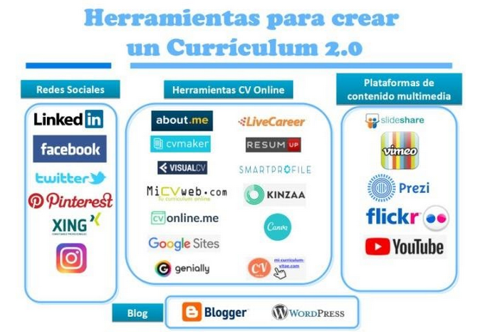

Introducción y clasificación
Vivimos en un mundo digital y tenemos al alcance de la mano innumerables herramientas gratuitas y de pago a las que podemos sacar mucho partido a la hora de buscar empleo. Los profesionales cada vez más, tienen que estar al día de las últimas herramientas online, fuentes de información y recursos que a la vez permiten una eficaz búsqueda de empleo, permiteb poner en valor las capacidades y competencias profesionales.
En el caso de este taller nos centraremos en las herramientas que podemos utilizar para crear un currículum 2.0.
Algunas son específicas y han sido creadas para tal fin, como son las webs de currículum online. Otras herramientas su fin es otro, pero se pueden aprovechar para crear contenido que forme parte de un currículum 2.0.
Algunas de las herramientas más comunes que intervienen en la creación de un currículum 2.0 son el Currículum online, Video currículum, Redes sociales y Blog

En el siguiente enlace encontraras una recopilación de herramientas que podrás utilizar para crear tu currículum 2.0: